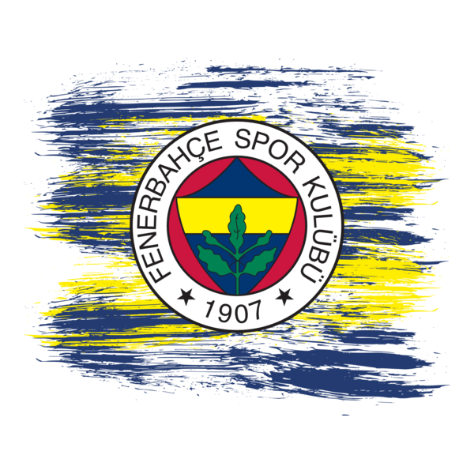
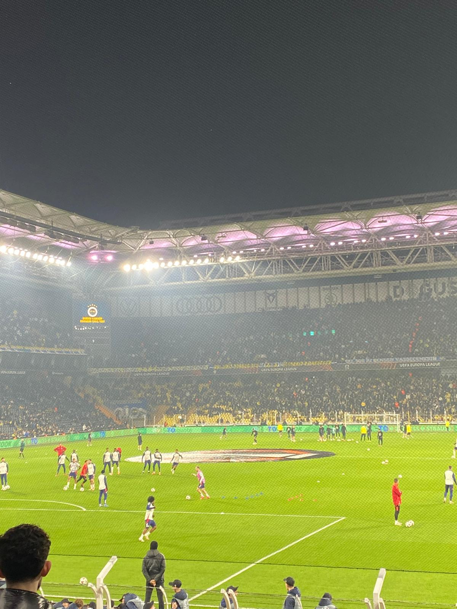
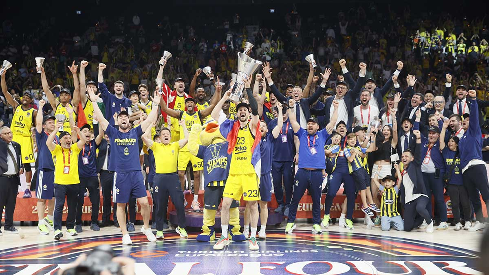
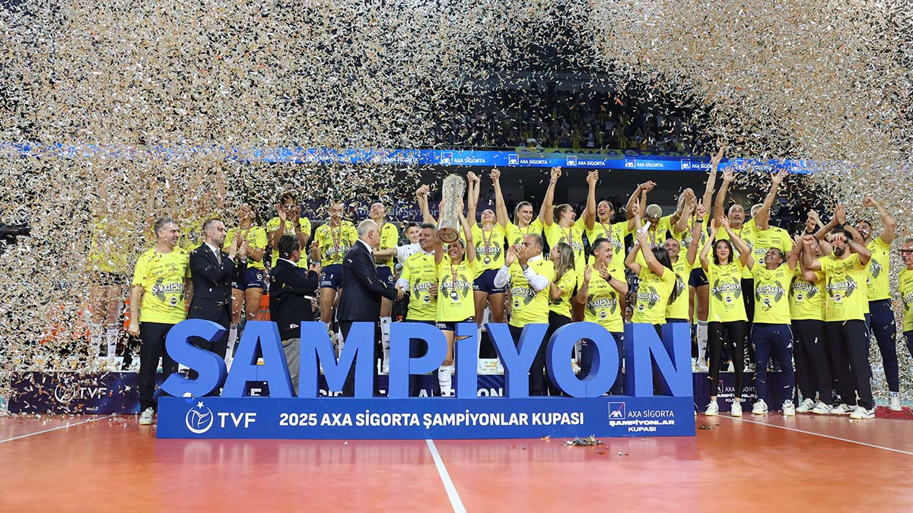

Türkiye'nin En Büyük Spor Kulübü: Fenerbahçe
"Branş fark etmeksizin peşinden koştuğumuz sevda."

Futbol
Kadıköy'ün boğası, Şükrü Saracoğlu Stadyumu'nda sayısız efsaneye ev sahipliği yaptı. Lefter'lerden Alex de Souza'ya uzanan şanlı bir tarih.
- 🏆 Süper Lig: 19
- 🏆 Türkiye Kupası: 7
- 🏆 Süper Kupa (Cumhurbaşkanlığı dahil): 9
- 🏆 Başbakanlık Kupası: 8
- 🏆 Türkiye Futbol Şampiyonası: 3
- 🏆 Millî Küme: 6
- 🏆 General Harrington Kupası: 1

Erkek Basketbol
Avrupa'nın zirvesi! Ülker Spor ve Etkinlik Salonu'nda yazılan destanlar ve kazanılan o unutulmaz EuroLeague zaferi.
- 🏆 Basketbol Süper Ligi: 11
- 🏆 Türkiye Kupası: 8
- 🏆 Cumhurbaşkanlığı Kupası: 7
- 🏆 EuroLeague: 2 (2017, 2025)

Kadın Voleybol
"Sarı Melekler" filelerin efendisi! Eda Erdem kaptanlığında hem Türkiye'de hem de dünya çapında gurur kaynağı.
- 🏆 Dünya ve Avrupa Şampiyonlukları
- 🏆 Sultanlar Ligi: 7
- 🏆 Türkiye Kupası: 4
- 🏆 Şampiyonlar Kupası: 4
- 🏆 CEV Şampiyonlar Ligi: 1 (2012)
- 🏆 CEV Kupası: 1 (2014)
- 🏆 FIVB Kulüpler Dünya Şampiyonası: 1 (2010)